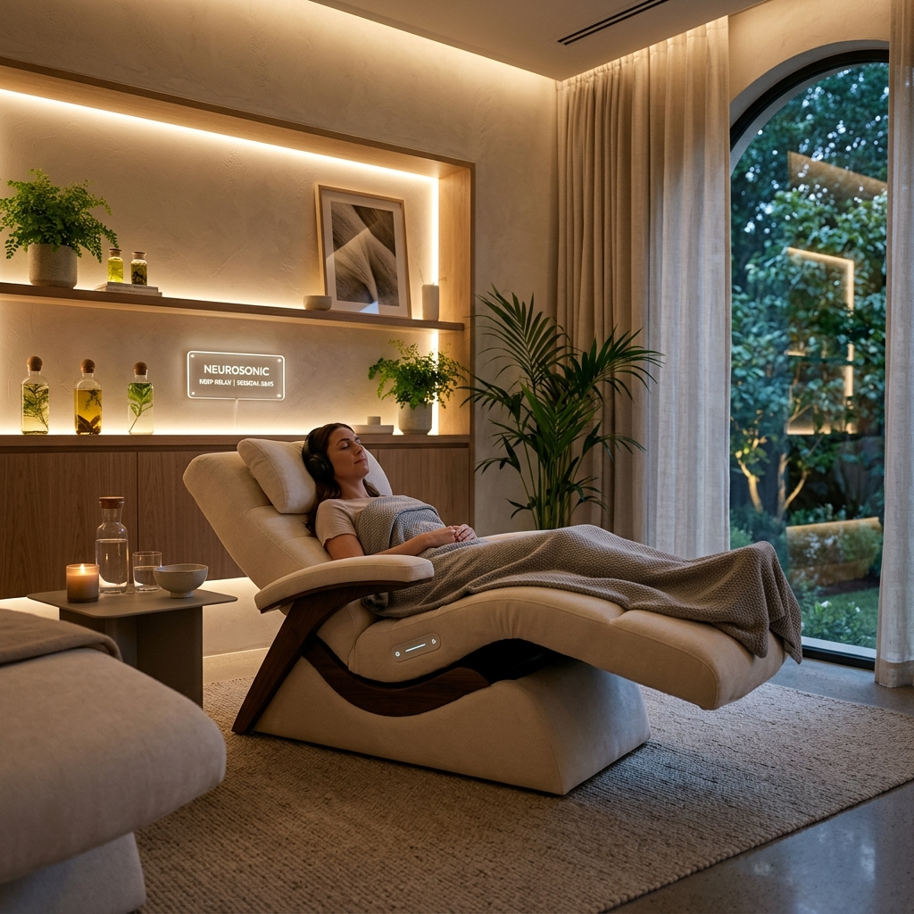

A nossa filosofia
Na Clínica Luís Santos, cada paciente é único — e deve ser tratado como um todo, não apenas como um conjunto de sintomas ou dentes a intervir.
A nossa prática clínica assenta numa visão integrativa da saúde, onde a saúde oral está profundamente ligada ao equilíbrio funcional do organismo, ao bem-estar emocional e à qualidade de vida.
A medicina dentária não deve ser padronizada. Cada boca, cada corpo e cada história são diferentes. Por isso, antes de qualquer intervenção clínica, dedicamos tempo a compreender o paciente, o seu contexto, as suas necessidades e os seus objetivos.

A nossa equipa trabalha com base em princípios claros, que orientam todas as decisões clínicas:
Antes de intervir, escutamos. Antes de tratar, avaliamos. Antes de decidir, explicamos.
Acreditamos que um paciente informado é um paciente mais tranquilo e mais envolvido no seu próprio processo de saúde. Por isso, damos especial importância à comunicação clara, ao esclarecimento de dúvidas e à tomada de decisões conscientes e partilhadas.

Utilizamos tecnologia de última geração para aumentar a precisão dos tratamentos, melhorar a previsibilidade dos resultados e reduzir o desconforto. No entanto, a tecnologia nunca substitui o cuidado humano — complementa-o.
A nossa clínica foi concebida como um espaço de cuidado global. Aqui, o ambiente, o ritmo e os protocolos são pensados para ajudar o corpo a desacelerar, regular o sistema nervoso e favorecer a recuperação.
O bem-estar não é um extra — é parte integrante do tratamento.

Oferecer cuidados de excelência, baseados em ciência, ética e empatia. Porque acreditamos que cuidar da saúde oral é também cuidar da pessoa como um todo.
Conheça a nossa equipa